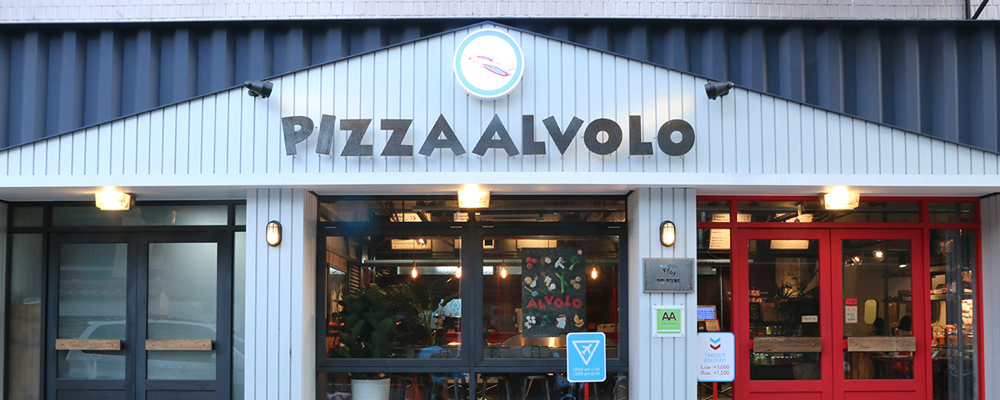
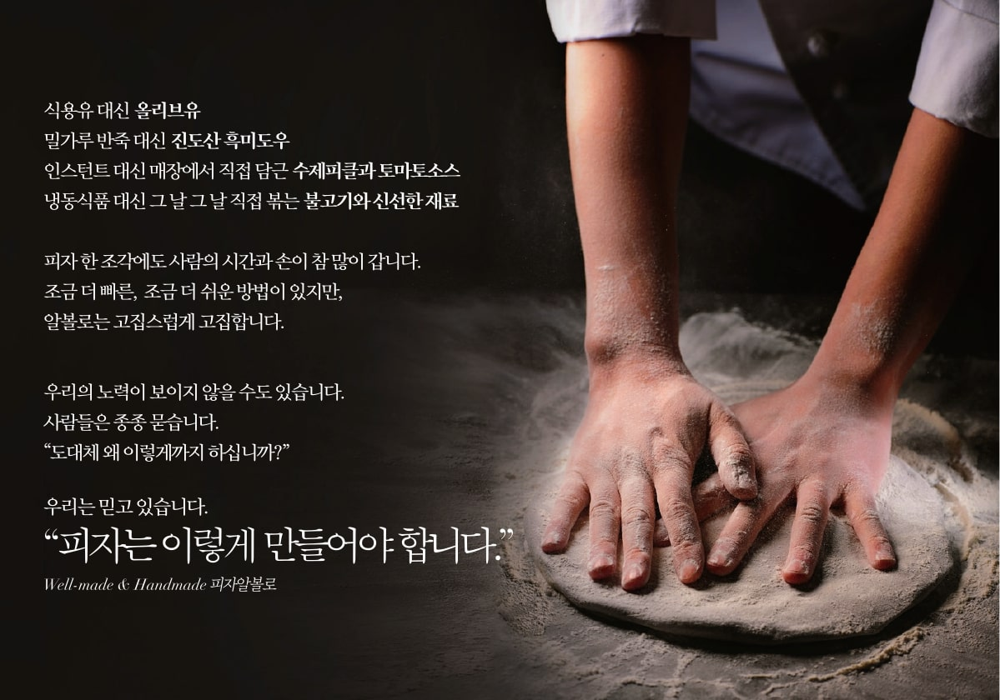

피자도 요리이고 과학입니다. “좋은 재료에 정성을 쏟아 만드는 것이 알볼로 피자맛의 핵심 레시피이자 경쟁력입니다.” 피자를 떠올릴 때, 일반적으로 비만을 유발하고 건강에 좋지 않은 패스트푸드로 저평가 되고 있습니다. 하지만 피자는 우리가 생각하는 것 이상으로 영양학적으로 우수한 식품이고 과학적인 발효식품입니다. 우리나라의 대부분의 피자가 미국식으로 너무 상업화되다보니 매뉴얼에 의해 정형화되고 자극적인 음식으로 만들어진게 사실입니다. 조리를 전공한 우리 형제는 이탈리아 전통피자에 한국식 피자를 접목 우리 입맛에 맞는 웰빙수제피자를 만들었습니다. 피자도 얼마든지 건강한 요리이자 과학적인 음식이라는 인식을 많은 사람들에게 꼭 심어주고 싶습니다.
피자로 새로운 세상의 문을 열다. 저희 형제는 어릴 때 부터 비행기와 하늘을 무척 좋아했습니다. 라이트형제가 비행기를 처음 발명하여 성공했듯이 세상에서 가장 맛있는 피자를 만들어 온 세상에 널리 알리고 싶은 저희 형제의 꿈과 열정을 담고 싶었습니다. 그렇게 해서 탄생한 것이 이태리어로 '비행하다, 비상하다'의 뜻인 알볼로입니다. 피자알볼로만의 최고의 맛과 서비스를 제공하고 피자알볼로가 점점 비상하는 모습을 보여주어 많은 이들에게 꿈과 희망을 주는 피자가게가 되고 싶습니다.
